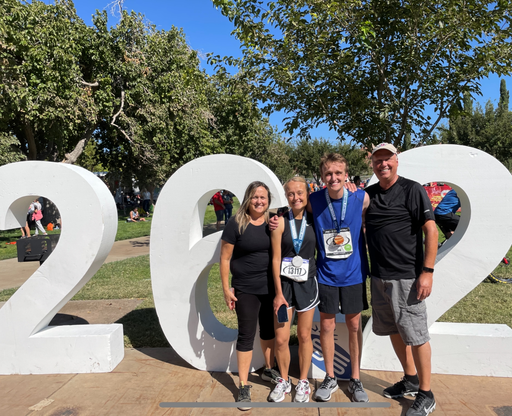
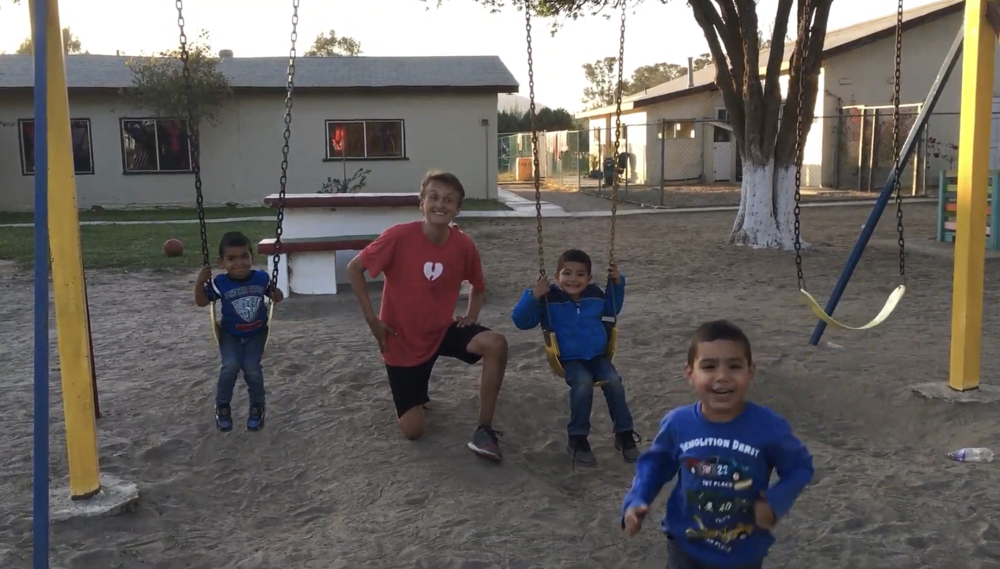

I speak Spanish!!!!
Below is a video of my skills! Click here to see on youtube
Although my spanish is far from perfect, I have the capablity of communicating in a work setting and quickly learning new vocab as necessary. I am technical tri-lingunal and speak very proficiently papiamento also. This langauge is only spoken by less then a million people however because of its creol background I have a basic understanding of Dutch, Portugesse, and French also.
More About Me
I am currently in my softmore year at Brigham Young Univerisity and have plans of entering the information systems Major. Before Byu, I grew up in Sandy Ut and recieved an eagle scout award after building sidewalks for an orphange in mexico. In Sandy I attend hillcrest high and graduated in 2019. Afterwards, I spent two years in the southern caribeen serving a mission for the Church of Jesus Christ of Latterday Saints and practicing my spanish.
Who I am

- Quick learner
- Patient
- Humble
- Adaptable
Eagle Scout project
(Supplies for an orphange in Mexico and building sidewalks) 